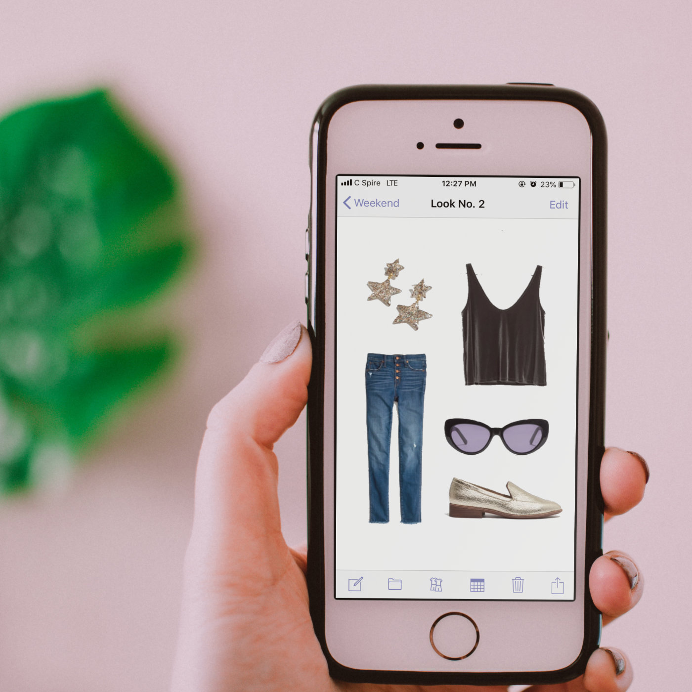
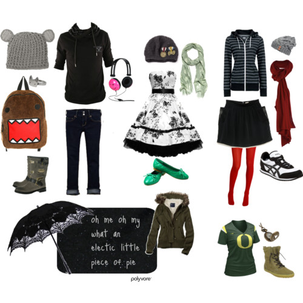
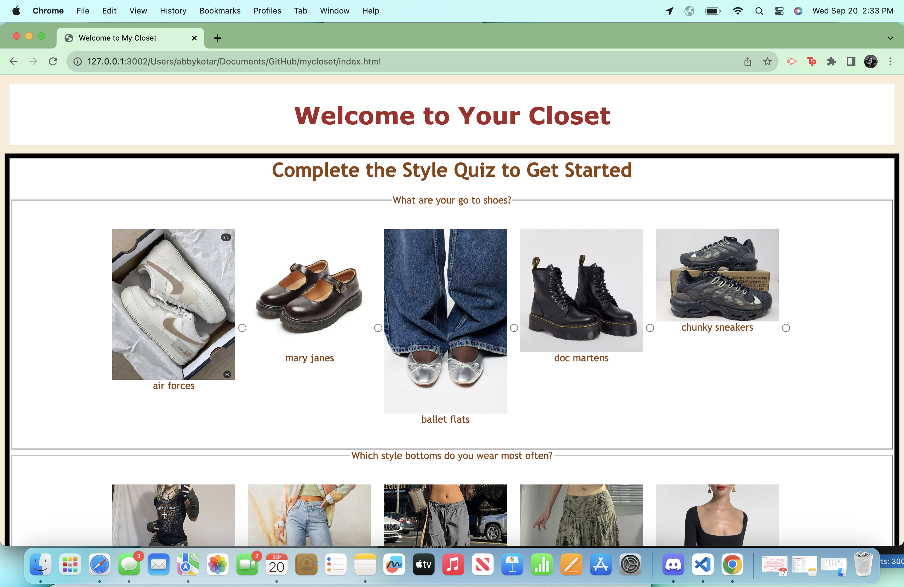
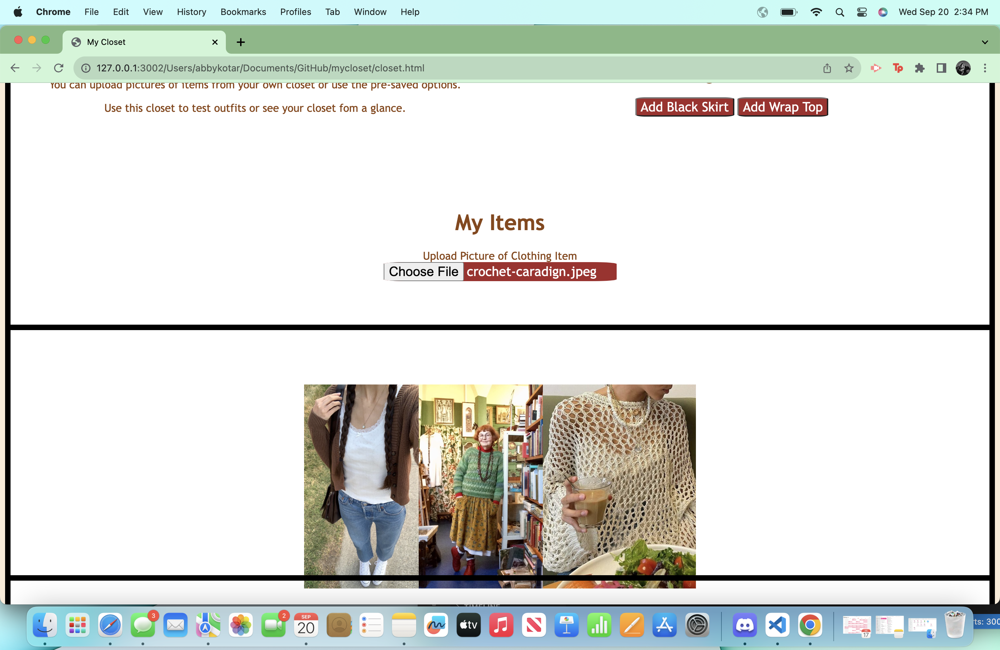
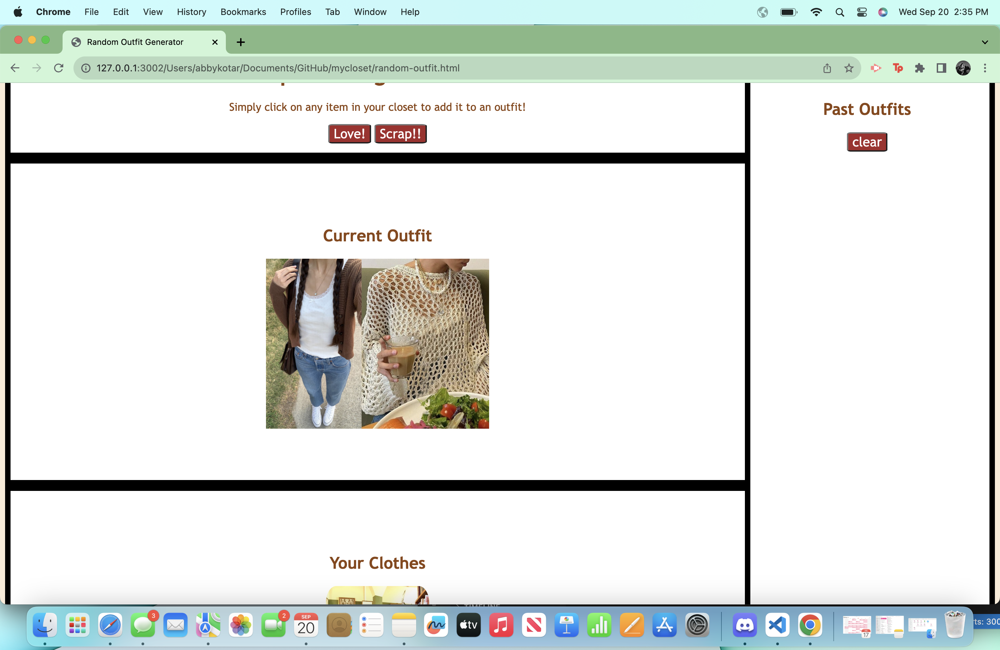
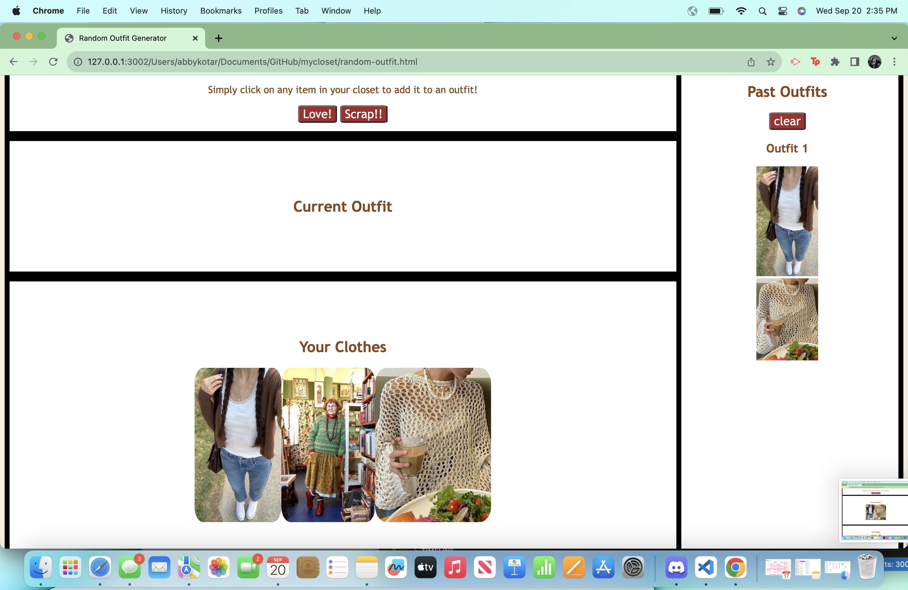

Abby Kotar: Projects
My Closet Project
For my web development course at University of York, we were tasked with creating an interactive website using HTML, CSS, and Javascript. I created "My Closet," a fashionista's heaven.
The user can take the style quiz, which recommends user's new items to add to their closets. Then, the user can upload pictures of their own clothing items to style and save outfits! Outfits and uploaded images are saved using JSON and local storage.
Demo
Inspiration
 Based on other apps, like Stylebook or Polyvore, I wanted to create a website that acted like an extension of ones closet. Additionally, I wanted to recommend user's different pieces that might suit their style. I added the style quiz on the inital page of the website to engage users and also recommend them clothes based on their style.
Inital Sketch
I created my inital sketch by simply drawing it out on my iPad. At this point, I had wanted a login screen and to save user's names.
However, I did some brief research and realized many users might be barred from using a website with a login page, or one that seems to take their information for no reason. Therefore, I decided to only save the results of their style quiz, as these resutls did not need to be associated with a profile.
Implementation
I ultimately wanted to website to look clean and simple, with the clothing items themselves being able to shine. I decided to go with more style styling, adding the white background with black lines to create cohesive boxes.
I used brown text to add a little color, but still keep it neutral. In the style quiz itself, I wanted the images to be somewhat even and for each question to be grouped. This is why I added the black line.

I wanted each style to have a different color title that aligned with the style, but I wanted to ensure the colors matched the WCAG guidelines. While I wanted ballet core to be written in a light pink, this does not have enough contrast.
I also included three style inspiration pictures and some good colors for users to better understand their style.
My closet suggests a few different clothing items based on the style result from the quiz. This is saved through JSON and saving the data locally. The user can also upload their own images, which are also saved through local storage using JSON.
Using the clothes uploaded to the closet, the user can create different outfits by clicking on the clothing pieces. The user can scrap the outfit, returning all clothes back to the closet, or save the outfit.
If the user saves the outfit, the outfit will appear in the side tab for saved outfits. If the user creates too many looks, they can clear the saved outfits and restart.
Overall, the website acts as style tool for users, as they can figure out their current style, create outfits based on whats in their closet, or find new pieces that might work in their closet.